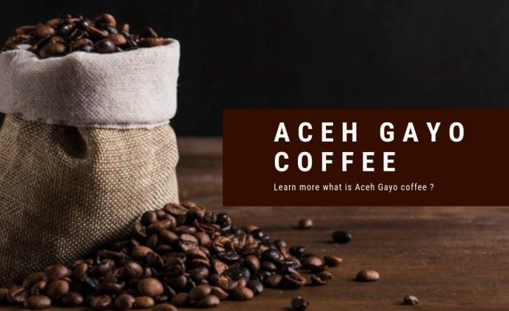
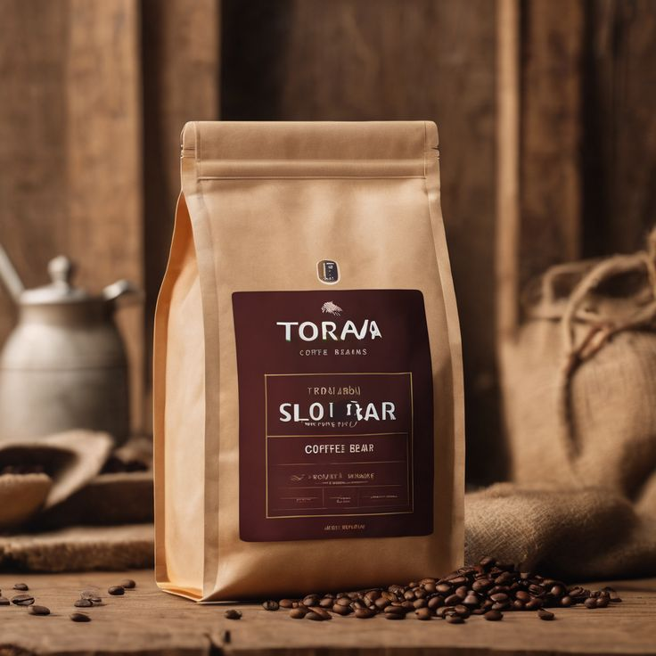
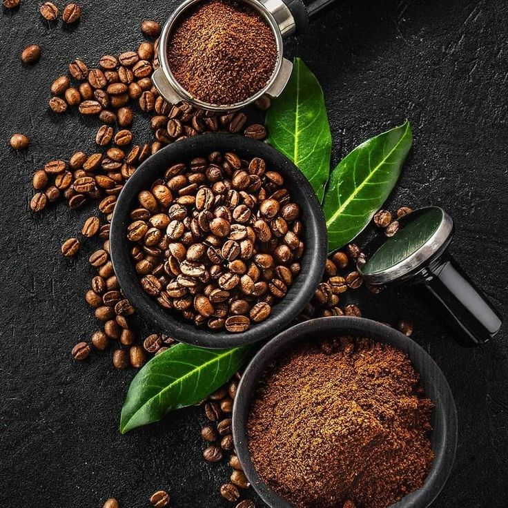
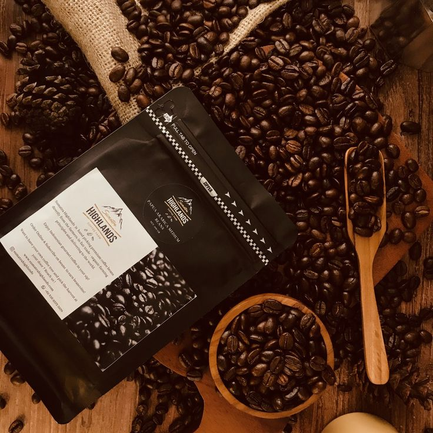
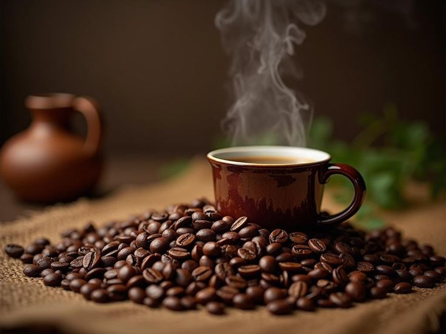

Produk Terbaik Kami

Kopi Gayo
Rasa bold dan aroma earthy dari pegunungan Aceh. Cocok untuk pecinta kopi pekat.

Kopi Toraja
Kaya rasa dengan sentuhan fruity. Toraja hadir untuk penikmat kopi klasik.

Kopi Kintamani
Cita rasa citrus khas Bali dengan aroma yang menyegarkan dan ringan.

Kopi Bromo
Kopi dengan cita rasa robusta khas Jawa Timur, menawarkan kehangatan di malam yang dingin.

Kopi Papua
Dengan rasa lembut dan kekayaan aroma, Kopi Papua menjadi pilihan tepat bagi penikmat kopi ringan.

Kopi Flores
Rasa manis alami dan aroma floral yang khas, kopi Flores menawarkan pengalaman baru yang eksotis.